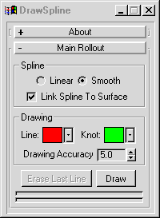

DrawSpline
General Usage:
- Select the surface you want to draw on (the surface should be a mesh, and ideally have all modifiers temporarily turned off).
- Set the options below as needed.
- Hit "Draw", and trace along the selected surface.
You can draw multiple splines, one after the other, and change any of the options below while drawing.
- Right click to end the drawing session, and the actual splines will be constructed and attached to the surface (if needed).
Back To Top...
Options:

- Spline Group:
- Linear/Smooth:
Sets whether the drawn spline will be smooth or not.
- Link Spline To Surface:
If on, the drawn spline will be attached to the surface so it will follow it while animating. This can cause spline creation to take a while if on.
- Drawing Group:
- Line/Knot:
These color swatches set what color the spline and its link points will be (the link points will only be created if "Link Spline To Surface" is on).
You can use the dropdown arrows next to the swatches to quickly choose a color.
- Drawing Accuracy:
Sets the minimum amount of space between knots as the spline is drawn.
Settings this to a larger number will keep the number of knots to a minimum.
- Erase Last Line:
Erases the last line drawn.
- Draw:
Click to begin drawing.
Right click in the viewport to stop drawing, and actually create the splines that were drawn (this step can take a while, so there are two progress bars provided. The top one shows total progress for all splines, and the bottom one shows progress for the current spline).
Back To Top...
Known Bugs/Limitations:
- Probably will only work well for objects that have all modifiers temporarily turned off.
Back To Top...
History:
06.22.2000 - Created.
06.26.2000 - Uses skin, added minDelta option.
06.28.2000 - Added ticks, linear/smooth toggle.
06.29.2000 - Made line options changeable while drawing.
Added color swatches
Verts bound to bones specifically now
Progress bars
08.07.2000 - Allowed an object with spacewarps to be drawn on, but only if the
spacewarps are first disabled.
10.30.2000 - Added "Erase Last Line"
- Added redraw callback for arc-rotate/pan support while drawing
Back To Top...
Bug reports/comments/suggestions: john@johnburnett.com